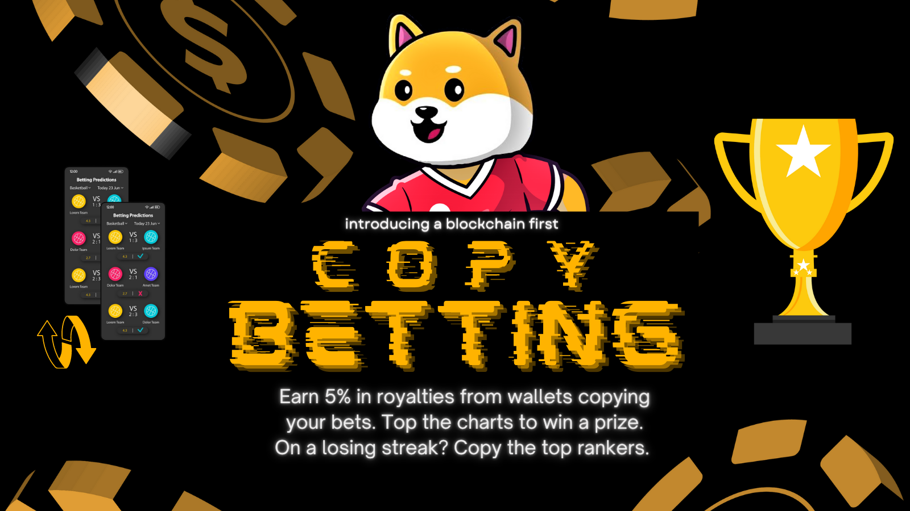

Bet-INU is a P2P Football Betting platform, the first with copy betting and BaaS on the blockchain. Scalable to all leagues/tournaments. Replacing Bookmakers with Bet Pools. On the BSC mainnet.
Making Football betting fun, easy, fair and accessible world wide.
Smart contract is designed to scale into all Leagues/Cup Competitions. Betting is bigger than just the Fifa World Cup.
We will cover EPL, UEFA Champions League, Laliga, Bundesliga, Serie A, Europa League, etc. incl the 2022 Fifa World Cup.
We have replaced the Bookmakers approach for setting house rules on bets and odds.
Instead Bet Pools are used for each fixture. Odds are determined by money in each pool.
Each fixture is singular, i.e. no duplicate fixtures with different betters.
Bet on results or goals by placing money into a Bet pool with other betters.
Each fixture has 5 bet pools to place money in: Win, Lose, Draw, Goalless, and Goals.
At the final whistle, winning wallets share the money from the losing bet pools.
i.e Fixture 1 - Mancity vs Liverpool: HomeWin Pool 100 BNB, AwayWin Pool 80 BNB, Draw Pool 90 BNB. If City wins, HomeWin pool betters will share: 80 + 90 BNB at; myBetAmountInPool/TotalBetsInPool * Proceeds from losing bet pools.
Start betting on the EPL this coming weekend! Running on BSC, our betting platform is cheap and fast!
Copy Betting Is Coming...

Bet INU facilitates Betting as a Service (BaaS) through P2P Copy Betting. And you can copy a single wallet across all leagues and fixtures. Youre on a losing streak, other wallets are killing it, just copy their bets! There are Bet Tippers and Copiers. Tippers earn 5% in royalties from copier porfits, on each win. You could earn thousands in royalties from wallets copying you. At the end of the Season, highest ranking Tippers win a Prize!
In no particular order, full features list:
P2P Betting
Bet Pools
League Infor and fixtures list
Fixture has 5 pools: home win, away win, draw, goals & goalless
Bet on result: home win, away win, draw
Bet on goals: goals, goal less
Get fixture information: teams, kickoff, scores, etc
Wallet can mix leagues to bet in, it will show true reflection of perfomance
Copers can copy a single wallet across all leagues and fixtures
Get fixture bets stats
Get fixture revenue stats
Get wallet Bet on fixture
Get wallet Bet outcome: result + goals
Bidding is in BNB with a minimum token holdings check
Team summary and stats
Get fixtures for team
Get betters on fixture
Get wallet fixture history
Get wallet's history with team
Get wallet betting balances: bet sums, correct monies on, and bets revenues
Get wallet perfomance: bets count vs win counts, success rate, profitability measure
Lucky dip lottery when buying or placing bet (auto)
Assign wallet to copy Bets from
Check Copied wallet's perfomance
Remove wallet to copy bets from
Cannot place vote independently if wallet to copy is assigned
Copy betting is only for result bets. not bets on goals
Royalties auto calculated and send to copied wallet on winnings withdrawal
Reimburse tokens to betters if no counter bets in pools
Withdraw winnings and initial bet 10mins after final whistle
Bet amount cap, auto increases hours before kickoff
Betting contests win from lottery pool
Lottery pool can poach reflections pool
Boost selected pool rewards before withdrawals, promos for matchday popular fixtures
Update fixture information: teams, kickoff, results. Safety hats on.
Bonfire events open to all, burn tokens.
Liquidity adding/funding programme inbuilt. Open to all to add liquidity
Liquidity funders get paid direct from tax revenue in_swap(), with 20% interest
Check liquidity funding profile and withdraw funds
Claim reflections
Team tokens locked 9 months
Mev bot trap and liquidate tokens
Max holdings 1%
Price fetch
Customise lucky dip parameters for: buying competition or betting competition
Tokenomics
500 million Total Token Supply
Burn function inbuilt
Max wallet 1% of supply
Team tokens 5% locked 9 months
Taxes 5/5
Tax revenue, 50% reflections, 50% growth and marketing
Liquidity adding function open to all, LP tokens locked by admin
Whats next
Fair Launch: 7pm GMT Monday 17 Oct 2022.
Ownership will be renounced soon after.
LP tokens will be provisionally locked 24 months.
Final Audit will be done from project revenue.
We will spend the next few months focusing on: front-end, a lot of marketing in all crypto circles, shaping the brand and later on acquiring market operating licenses. As we shape a realistic timeline.
This is a community project, betting is scalable into all communities world wide, spread the word. Each weekend we will hold betting competitions, entering a lucky dip lottery when you bet. Bet pool rewards/BNB are boosted for popular pools.